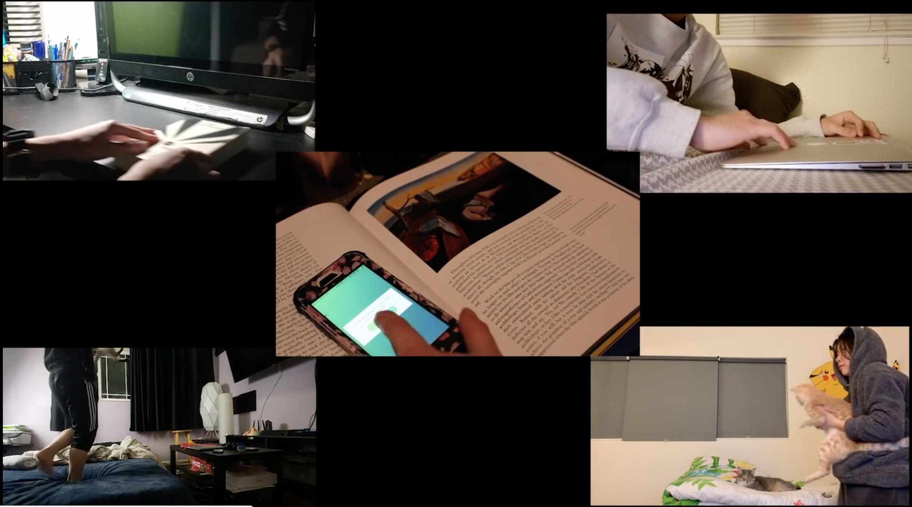

Oblique Strategies
Last Minute Works
For Oblique Stragtegies we picked all three, your talent, finishing last, and accretion. The assignment was made with our talent, procrastination. The video was made out of individual clips and team clips. In the video we showed our talents and jutxaposed it with accretion.